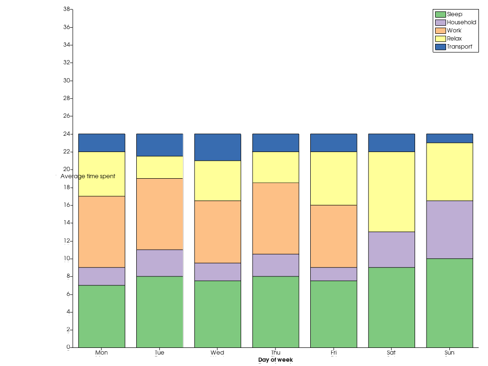

pyvista.plotting.charts.BarPlot¶
- class BarPlot(x, y, color=None, orientation='V', label=None)¶
2Dの棒グラフを表すクラス．
ユーザーは通常，新しいプロットインスタンスを直接作成せず，専用の2Dチャートのプロットメソッドを使用する必要があります．
- パラメータ
- xarray_like
描画するバーの位置を（垂直方向であればx軸に沿って，水平方向であればy軸に沿って）指定します．
- yarray_like
描画するバーのサイズ．シーケンスを渡すことで，複数のバーを重ねることができます．
- colorcolor, オプション
このプロットに描かれるバーの色です．
pyvista.parse_colorで解析可能な任意の色が使用できます．デフォルトは"b"です．- orientation
str,optional このプロットに描画される棒の向き．水平方向であれば
"H"，垂直方向であれば"V"のいずれかです．デフォルトでは"V"が表示されます．- label
str,optional このプロットのラベルで，チャートの凡例に表示されます．デフォルトは
""です．
例
1週間のアクティビティに費やした平均時間を示す積み上げ式の棒チャートを作成します．
>>> import pyvista >>> import numpy as np >>> x = np.arange(1, 8) >>> y_s = [7, 8, 7.5, 8, 7.5, 9, 10] >>> y_h = [2, 3, 2, 2.5, 1.5, 4, 6.5] >>> y_w = [8, 8, 7, 8, 7, 0, 0] >>> y_r = [5, 2.5, 4.5, 3.5, 6, 9, 6.5] >>> y_t = [2, 2.5, 3, 2, 2, 2, 1] >>> labels = ["Sleep", "Household", "Work", "Relax", "Transport"] >>> chart = pyvista.Chart2D() >>> _ = chart.bar(x, [y_s, y_h, y_w, y_r, y_t], label=labels) >>> chart.x_axis.tick_locations = x >>> chart.x_axis.tick_labels = ["Mon", "Tue", "Wed", "Thu", "Fri", "Sat", "Sun"] >>> chart.x_label = "Day of week" >>> chart.y_label = "Average time spent" >>> chart.grid = False # Disable the grid lines >>> chart.show()
 メソッド
プロットの表示を切り替えます．
BarPlot.update(x, y)このプロットのバーの位置やサイズを更新します．
アトリビュート
Brushオブジェクトは，このプロットの形状がどのように塗りつぶされるかを制御します．
プロットの色を返したり設定したりします．
プロットの色テーマを返したり設定したりします．
プロットの色を返したり設定したりします．
チャートの凡例に表示されている，このプロットのラベルを返すか設定します．
チャートの凡例に表示されている，このプロットのラベルを返すか設定します．
このプロットに描かれたすべての線のラインスタイルを返すか設定します．
このプロットに描かれたすべての線のライン幅を返すか設定します．
このプロットのバーの向きを返すか設定します．
Penオブジェクトは，このプロットの線がどのように描かれるかを制御します．
図の見え方を返すか設定します．
描かれたバーの位置を取得します．
描かれたバーのサイズを取得します．